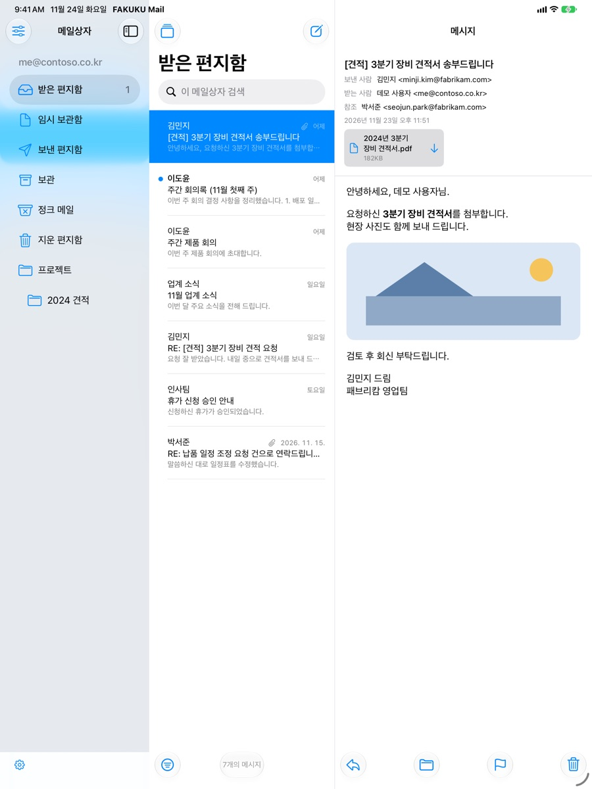
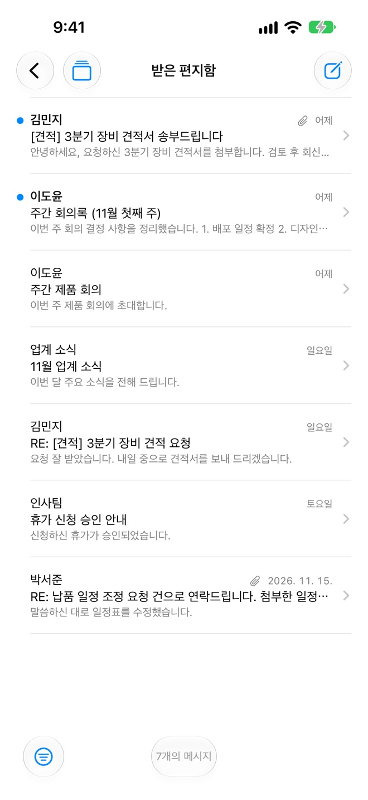
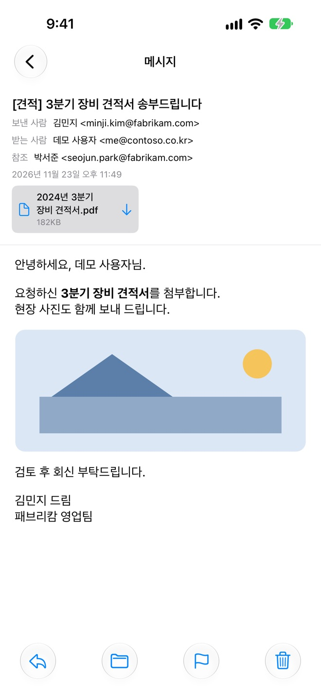
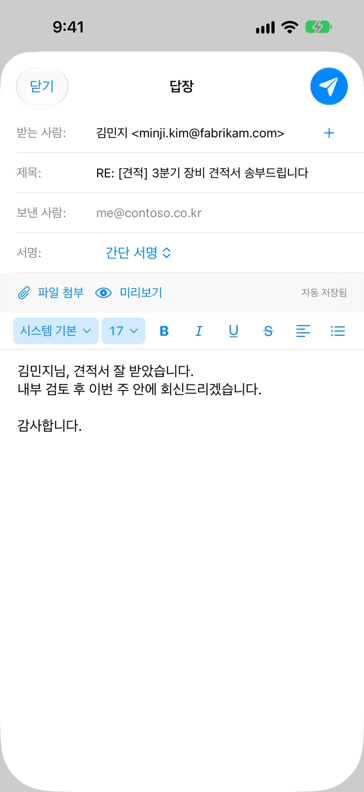
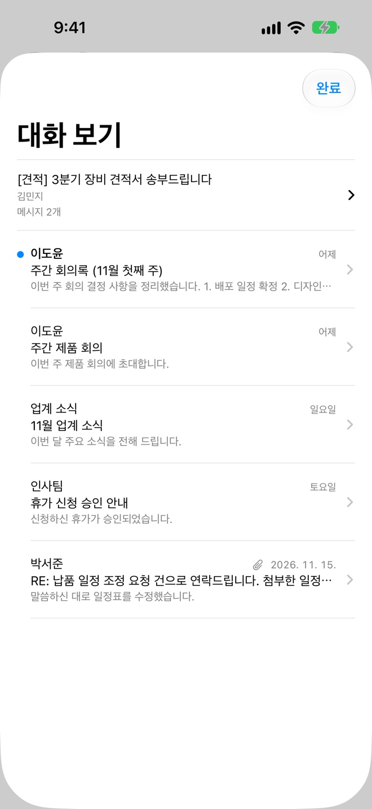
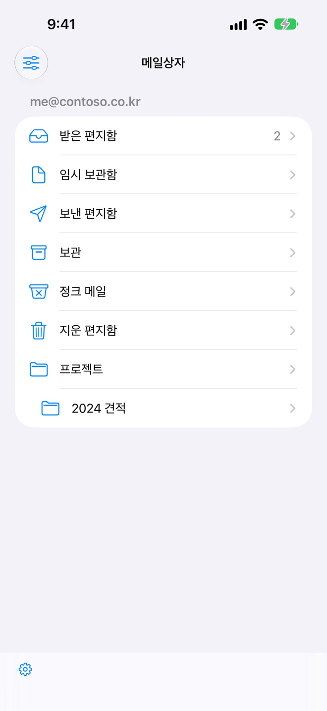
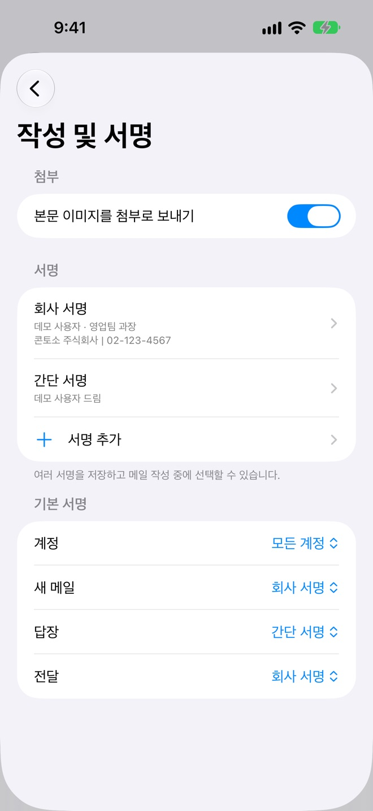
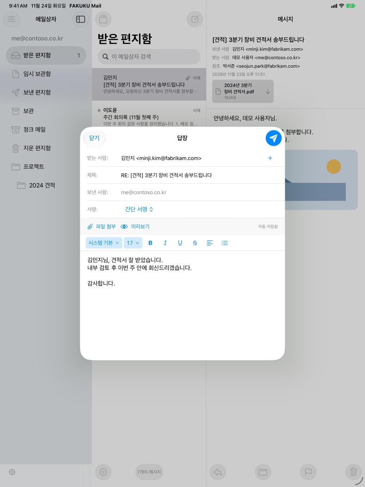
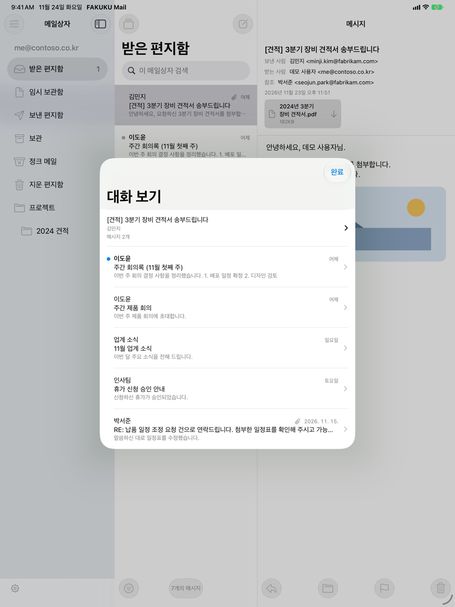
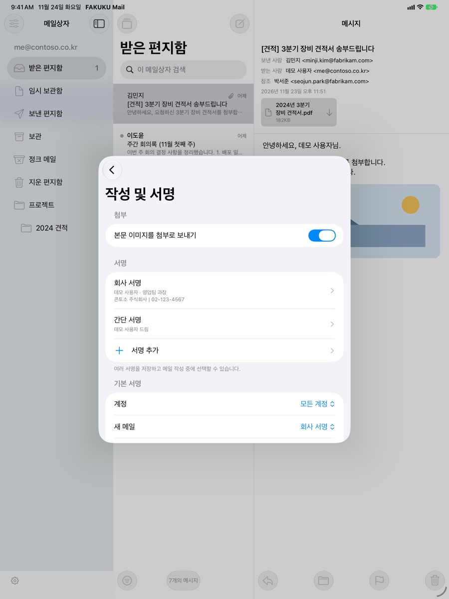

iPhone · iPad
iPhone · iPadMicrosoft 365(회사·학교 계정), iCloud, Gmail을 iPhone과 iPad에서 함께 확인하세요. 대화로 묶어 읽고, 서식과 서명을 넣어 답장하고, 첨부 파일까지 바로 처리합니다.
Check Microsoft 365 (work or school), iCloud and Gmail together on iPhone and iPad. Read in conversations, reply with formatting and signatures, and handle attachments on the spot.


회사 메일과 개인 메일을 함께 쓰는 사람에게 맞춘 기능들입니다.
Built for people who use work and personal mail side by side.
Microsoft 365는 Microsoft 로그인 화면으로, iCloud와 Gmail은 앱 전용 암호로 연결합니다. 여러 계정을 더하고 메일상자를 계정별로 봅니다.
Sign in to Microsoft 365 on Microsoft's own page, and add iCloud and Gmail with app-specific passwords. Add several accounts and browse each one's mailboxes.
같은 주제의 메일과 답장을 하나의 대화로 묶어, 주고받은 흐름을 한눈에 봅니다.
Messages and replies on the same topic are grouped into one conversation so you can follow the thread at a glance.
본문을 화면 너비와 글자 크기 설정에 맞춰 보여 주고, 본문 속 그림과 첨부 파일 목록을 함께 표시합니다. 첨부 파일은 파일 앱에 저장할 수 있습니다.
Messages fit your screen width and text size, with inline images and an attachment list. Save attachments to the Files app.
굵게·기울임·밑줄, 글꼴 크기, 정렬과 목록을 쓰고, 여러 HTML 서명 중 계정별 기본 서명을 고릅니다. 보내기 전에 미리보기로 확인하세요.
Use bold, italic, underline, font size, alignment and lists, and pick a default HTML signature per account. Preview before you send.
첨부 파일 이름이 받는 쪽 메일 프로그램에서 깨지지 않도록 인코딩을 보정해 보냅니다. 첨부 합계는 25MB까지입니다.
Attachment names are encoded so they don't break in the recipient's mail program. Attachments can total up to 25 MB.
메일 속 외부 이미지는 기본으로 불러오지 않아, 메일을 열었다는 사실이 보낸 사람에게 알려지는 것을 줄입니다. 필요할 때만 불러오세요.
External images aren't loaded by default, reducing read tracking by senders. Load them only when you want to.
읽음·깃발·이동·지우기를 밀어서 바로 처리하고, 메일상자 검색과 읽지 않음·깃발·첨부 필터, 정렬을 씁니다.
Swipe to mark read, flag, move or delete. Search a mailbox and filter or sort by unread, flagged or attachments.
Siri와 단축어로 최근 메일 3통의 요약을 들을 수 있습니다. 사용 가능한 기기에서는 Apple Intelligence가 기기 안에서 요약합니다.
Ask Siri or Shortcuts for a summary of your three latest messages. On supported devices, Apple Intelligence summarizes on device.
최근에 불러온 메일 사본을 기기에 두어 연결이 없을 때도 읽을 수 있습니다. 설정에서 언제든 지울 수 있어요.
Recently fetched messages are kept on device so you can read without a connection. Clear them any time in Settings.
실제 앱의 데모 화면입니다. 기기의 밝은 모드와 어두운 모드를 그대로 따릅니다.
Demo screens from the actual app. It follows your device's light and dark appearance. (Screens are in Korean.)








처음 열면 Microsoft 365, iCloud, Gmail 중에서 연결할 계정을 고릅니다.
On first launch, choose Microsoft 365, iCloud or Gmail.
Microsoft 365는 Microsoft 로그인 화면에서, iCloud·Gmail은 제공업체에서 만든 앱 전용 암호로 연결합니다.
Microsoft 365 uses Microsoft's sign-in page; iCloud and Gmail use an app-specific password created at the provider.
받은 편지함을 열어 바로 읽고 답장하세요. 설정에서 계정을 더 추가할 수 있습니다.
Open your inbox to read and reply. Add more accounts in Settings.
FAKUKU Mail은 메일을 개발자 서버로 보내지 않습니다. 자세한 내용은 개인정보 처리방침을 확인해 주세요.
FAKUKU Mail never sends your mail to a developer server. See the Privacy Policy for details.
메일은 Microsoft, Apple, Google 같은 메일 제공업체와 기기 사이에서만 오갑니다.
Mail travels only between your device and providers such as Microsoft, Apple and Google.
인증 토큰과 앱 전용 암호는 iOS 키체인에 저장합니다.
Tokens and app-specific passwords are stored in the iOS Keychain.
개발자가 넣은 광고나 분석 도구가 없습니다.
No developer-provided ads or analytics SDKs.
Microsoft 365의 회사·학교 계정(Exchange Online), iCloud 메일, Gmail입니다. 여러 계정을 함께 추가할 수 있습니다. 네이버 메일 같은 다른 메일 서비스는 아직 지원하지 않습니다.
Microsoft 365 work or school accounts (Exchange Online), iCloud Mail and Gmail. You can add several accounts. Other providers are not supported yet.
같은 이름의 iPhone·iPad용 앱으로, 모바일에 맞춰 따로 만들었습니다. 두 앱 모두 같은 메일 서버를 보므로 읽음, 깃발, 폴더가 어디서든 같게 보입니다. Mac 앱은 mail.fakukulab.com에서 받을 수 있어요.
It's the iPhone and iPad member of the family, built separately for mobile. Both use the same mail servers, so read state, flags and folders match everywhere. Get the Mac app at mail.fakukulab.com.
아니요. 앱은 연결한 메일 제공업체와 직접 통신하며, 오프라인 열람을 위한 사본과 설정만 기기에 저장합니다.
No. The app talks directly to your mail provider and keeps only offline copies and settings on your device.
현재 버전은 백그라운드 새 메일 푸시를 지원하지 않습니다. 앱을 열면 메일을 새로 불러옵니다.
Not in the current version. Mail refreshes when you open the app.